MIGAS DE PAN
Desparece el
menú derecha
Si me desaparece un menú y no se reinstalarlo, siempre se puede volver al menú predeterminado
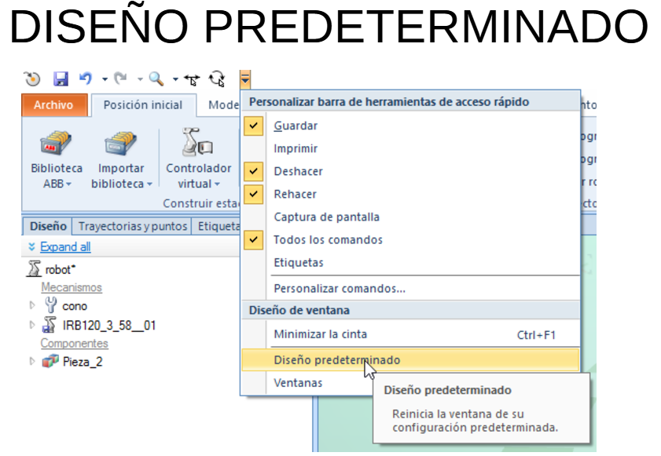
Si el menu de las pestañas se oculta al quitar el ratón y aparece al acercarlo, pero quiero que este siempre visible.
Desactivar minimizar la cinta
INICIO
Cambio de idioma de la controladora: distintas formas y sus consecuencias
La mejor opción es crear una estación vacía, incorporar el robot y la controladora desde el diseño y, antes de comenzar a trabajar, modificar las opciones necesarias, incluido el idioma.
Si la estación ya se ha abierto con el idioma en inglés y posteriormente se cambia el idioma, existen varias opciones que generan diferentes consecuencias en RobotStudio. Por ejemplo, si el cambio se realiza desde el área de cinta del controlador, en la sección Controlador virtual → Opciones RW del controlador, pueden producirse efectos no deseados, como la eliminación de los módulos de programa RAPID.
La mejor alternativa para cambiar el idioma una vez creado el programa es realizar la operación desde la FlexPendant.
Al cambiar el idioma desde la FlexPendant, puede aparecer una pantalla gris. Las posibles soluciones son:
- Apagar y encender la FlexPendant.
- Realizar un reinicio en caliente.
Si el cambio de idioma se realiza desde la estación, el programa de la estación se conserva, pero se eliminan todos los módulos de programa RAPID.
A continuación se describe un estudio de las consecuencias observadas según el método utilizado:
A) Cambio de idioma desde las opciones RW del controlador
Tengo un programa cargado y cambio el idioma desde el área de cinta del controlador, en la sección Controlador virtual → Icono RW → Opciones del controlador. El sistema indica que va a reiniciarse y, tras el reinicio, se eliminan todos los módulos de programa.
En este caso no tenía sincronizado RAPID con la estación. Al volver a arrancar la FlexPendant, en la ventana de producción, la opción PP to Main aparece deshabilitada y únicamente está disponible la ventana de producción.
Voy a cargar un programa RAPID y observo que el sistema se encuentra en Paro protegido. Tras pulsar Enable, los motores pasan a estado Motors On. El editor de programas también muestra un estado correcto.
El programa no funciona correctamente porque el robot adopta una posición errónea, aunque este problema está controlado. El programa RAPID es correcto y puedo seguir añadiendo instrucciones.
Esta forma de trabajo puede considerarse controlada.
B) Cambio de idioma con sincronización previa con la estación
Tengo un programa cargado desde la FlexPendant. Desde la ventana de producción, sincronizo con la estación utilizando el área de cinta del menú Inicio. Inicialmente no selecciona ningún elemento, por lo que selecciono todo y realizo la sincronización.
Posteriormente cambio el idioma desde el área de cinta del controlador. Como resultado, se elimina todo el contenido RAPID, pero el programa permanece almacenado en la estación.
Gracias a ello, puedo sincronizar de nuevo con RAPID y recuperar el programa. Al abrir la ventana de producción de la FlexPendant y ejecutar PP to Main, compruebo que el programa vuelve a estar cargado en la tarea correspondiente.
C) Cambio de idioma y creación de un nuevo programa desde la FlexPendant
Tengo un programa cargado y cambio el idioma desde Controlador virtual → Icono RW → Opciones del controlador. Tras el reinicio, se eliminan todos los módulos de programa.
Desde la FlexPendant, al acceder al editor de programas, el sistema indica que no existe ningún programa creado. Creo un programa nuevo denominado MainModule, pero observo que no dispongo ni de la herramienta ni de los WorkObjects (WO).
Al sincronizar con la estación, si esta contiene un programa, se elimina el módulo Main, pero se mantiene el Proceso 10. Además, no desaparecen ni los WorkObjects ni la herramienta.
Si vuelvo a sincronizar con RAPID, se crea el módulo CalibData y también Module1. En este último aparece el Proceso 10 sin el módulo Main, y las líneas muestran errores debido a la desaparición de la herramienta utilizada en las instrucciones de movimiento.
Conclusión
La opción más recomendable es crear la estación, añadir la controladora y configurar el idioma antes de comenzar a programar. De esta forma se evitan todos los problemas descritos anteriormente y se puede trabajar desde el principio con la controladora en español.
INICIO
Ubicacion programa tareas
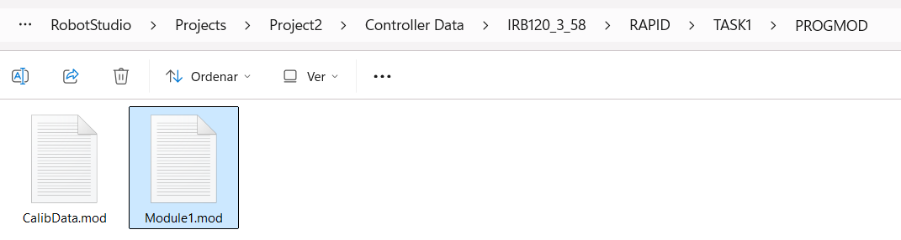
La ubicación de los programas guardados en RAPID desde el area cinta de RAPID, sección controlador, guarda programa.
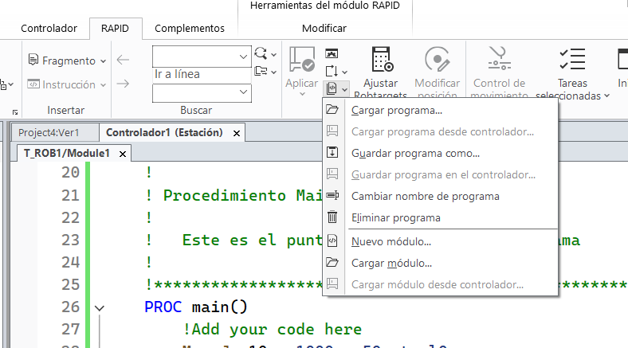
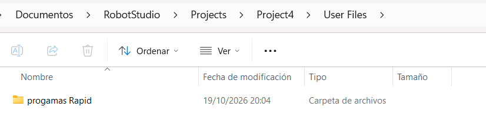
INICIO
Completar una
coordenadas con selección gráfica
Si quiero rellenar una coordenadas con las herrmientas de selección no se me debe de olvidar clickar donde deseo poner las coordenades y luego seleccionarla con la herramienta grafica
INICIO
Calibración
Si el motor no esta calibrado no se puede mover el motor linealmente ni con reorientación.
El motor solo se puede mover los ejes
-
Las causas de que el motor no este calibrado.
INICIO
Extensiones
geometría
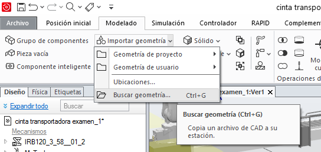
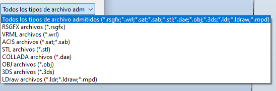
Se puede crear un objeto con un programa externo en los siguientes formartos y se pueden incluir en la biblioteca de robotstudio
Un formato que funciona muy bien es el .SAT, la piezas dibujadas en este formato, robotstudio es capaz de indentificar los puntos de la geometria.
Una pieza dibujada con freecad, se puede exportar a STEP en este formato robotstudio reconoce los puntos de geometria.
Tambien se puede exportar a STL, este formato lo reconoce RobotStudio pero no puede acceder a los puntos de geometria, (centros, esquinas, puntos medios).
.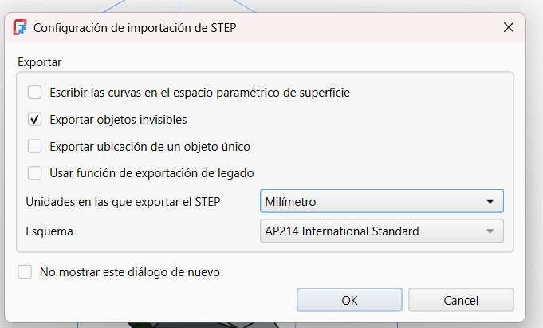
de STEP y con un programa externo convertirlo a SAT, si se prefiere trabajar en este formato. INICIO
Coordenadas TCP de myTool y STL
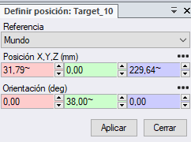
Para conocer las coordenadas del TCP de mytool
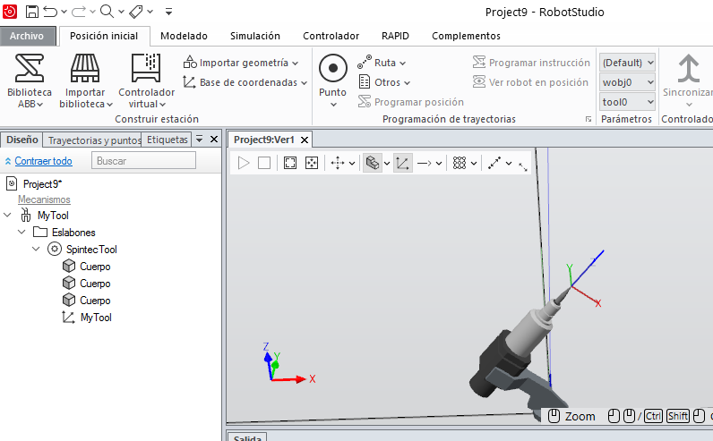
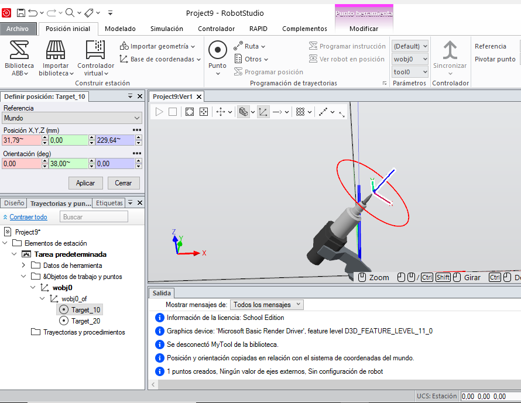
Para exportar my tool a stl, seleccionamos Spintec Tool y exportamos geometria a STL
INICIO
Crear una trayectoria curva
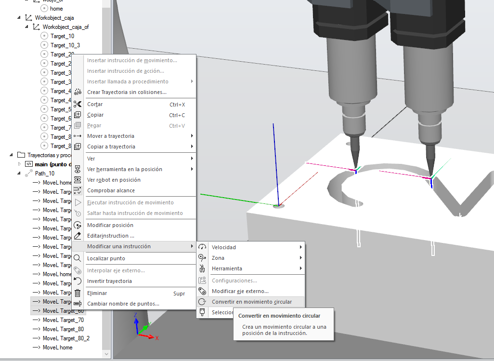
En la ruta, selecciona el punto intermedio y el final, menú contextual modificar la instrucción a movimiento circular
INICIO
Guardar programa Rapid
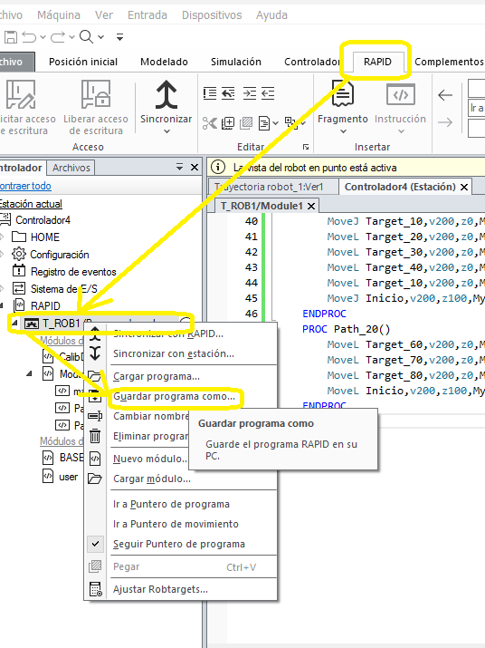
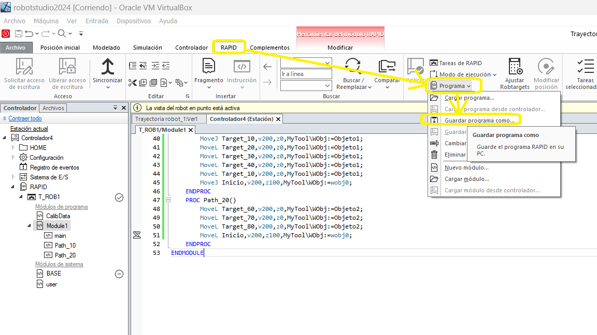
Al guadar un programa en rapid, se guarda en una carpeta con 3 archivos, los archivos con extensión mod se puede leer con el block de notas.
En calibdata esta almacenado los datos del TCP y de los workobject, en module1 incluye el programa rapid, (puntos, procesos...)
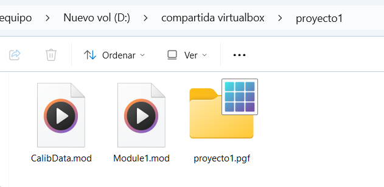
INICIO
Flexpendant, que
hacer despues de un paro protegido
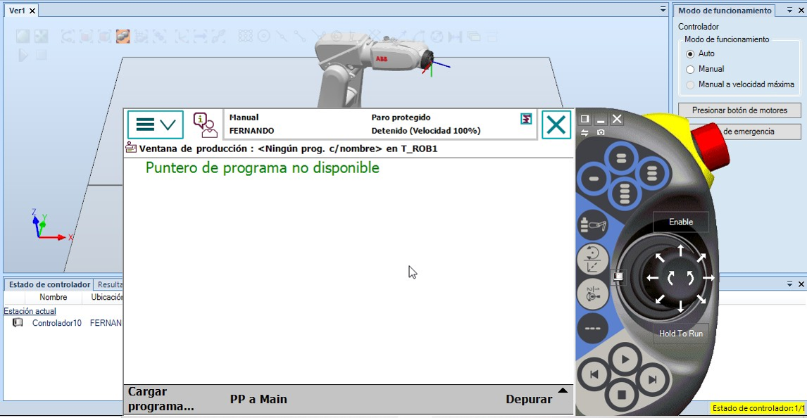
Volver a poner motor ON despues de aparecer un para protegido
Ajuste fine.
* Soltar hombre muerto (Enable pasa de verde a blanco
* Activar la parada de emergencia
* Desactivar parada de emergencia
* Pulsar motor on
* Volver a pulsar Enable ( pasar de blanco a verde)
Pulsador luminoso el motor on.
* Parpadeo lento los motores apagados
* Fija al pulsarlo con hombre muerto habilitado
* Parpadeo rápido motores encendidos
INICIO
Ir a... Alinear
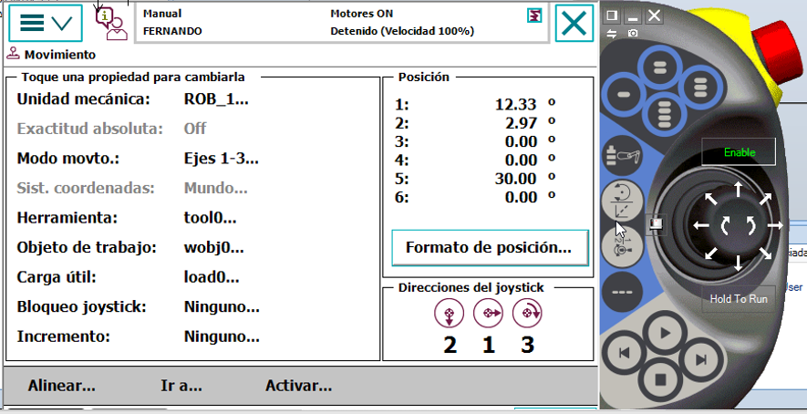
Pulsado sobre ir A, nos aparece una pantalla con los puntos del robtarget, se selecciona uno, manteniendo pulsado el robot se dirige a ese punto.
Manteniendo pulsado alinear, el eje Z del TCP, se aliena con el EJE MAS CERCANO del sistema de coordenas seleccionado
INICIO
Singularidad
* Al mover el robot linealmente con referencia a la base se puede
producir una singularidad* Singularidad: dos o mas ejes están alineados, al controlador no sabe que movimiento tomar.
* Solución: mover el robot con los ejes hasta que desaparezca la singularidad.
Detalle de
visualización sistemas de coordenadas flexpendant
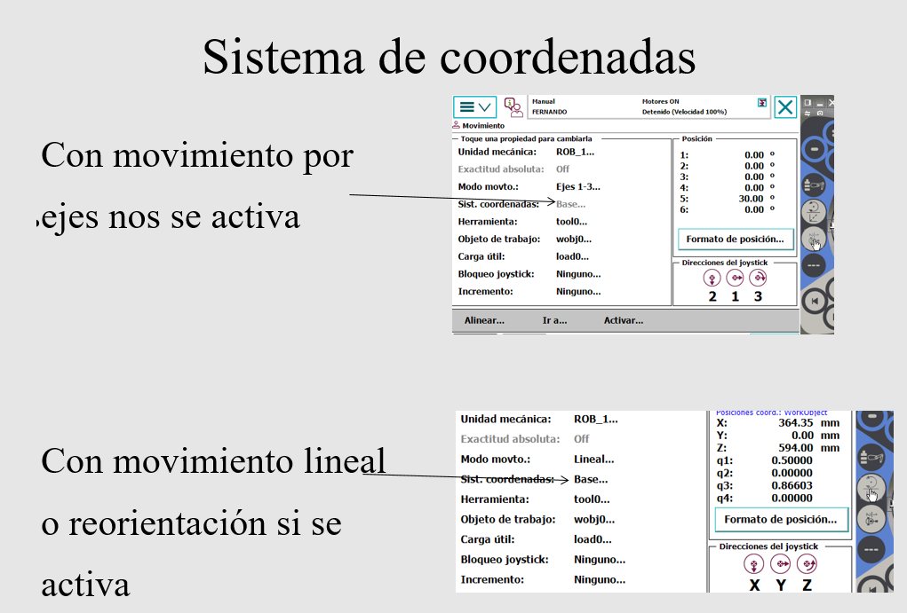
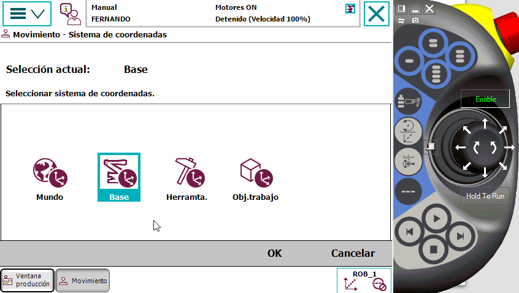
Nota : mover el brazo con referencia a la base y a la herramienta y comprobar La diferencia.
Mejor se vera será en el movimiento Z
INICIO